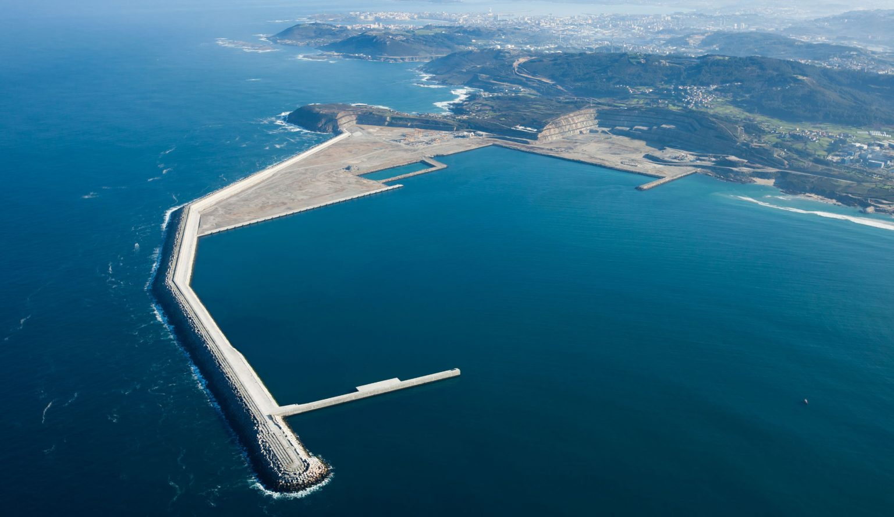

Esta actividad se concreta en la realización de más de 35 km de diques de abrigo y cerca de 30 km de muelle; en la realización de 1.000 cajones de hormigón, 20 millones de m3 de hormigón en cajones, bloques y superestructuras, más de 60 millones de m3 de dragado y 40 millones de m3 de relleno.
Asimismo, hemos desarrollado innovaciones aplicadas a la construcción de diques, reconocidas internacionalmente y que han contribuido a reducir el impacto en el medio ambiente y optimizar el coste de producción. Es el caso de Cubipod y de la pinza SATOGrab.
Entre los proyectos abordados en España, destaca la construcción del nuevo puerto exterior de A Coruña (instalaciones portuarias de Langosteira) y el de Granadilla en Tenerife, así como las ampliaciones de los puertos de Alicante, Algeciras y Gijón. A ellos se suma la construcción del nuevo dique sur en el Puerto de Barcelona, el desarrollo exterior del puerto de Las Palmas en la dársena de África, la nueva terminal de contendedores en el Puerto de Santa Cruz de Tenerife, así como la terminal marítima para descarga de hidrocarburos en la Bahía del Puerto de Algeciras.
Además, la compañía lleva a cabo la segunda fase de la prolongación del dique Reina Sofía Sur, en el puerto de Las Palmas, las obras de la primera fase del espigón central en el Puerto de Bilbao, la tercera fase de la ampliación del muelle adosado en el Puerto de Barcelona y la ampliación y remodelación de la terminal marítima número 6 de Palma de Mallorca.
